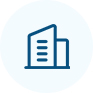
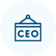
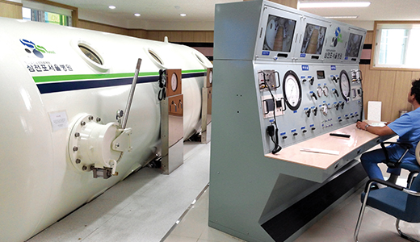
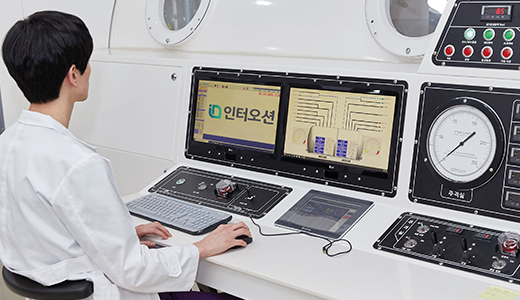
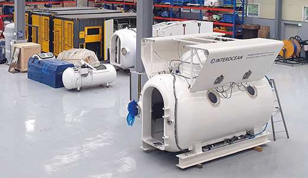
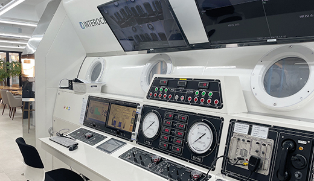
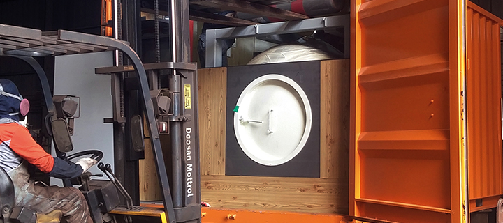
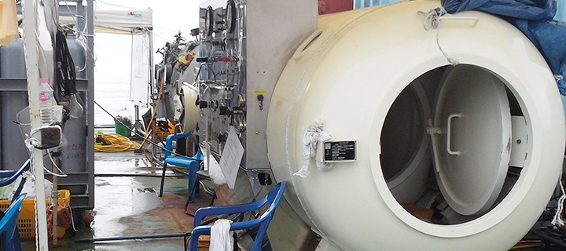
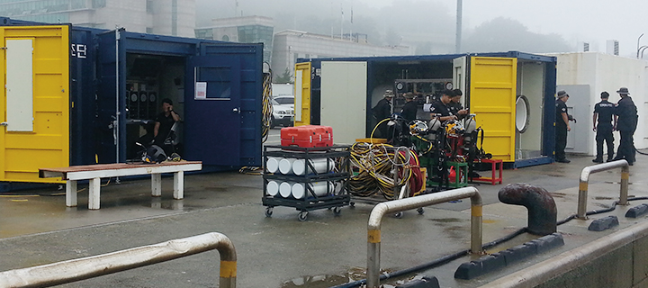
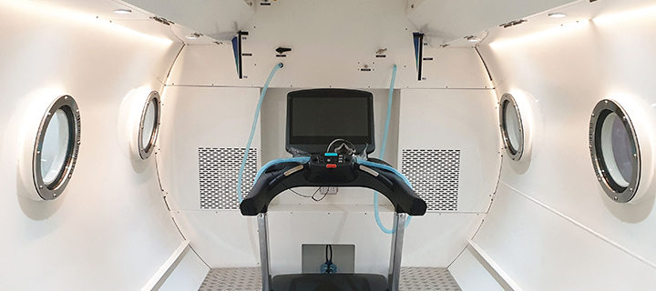

회사소개
㈜인터오션은 국내 최초 고압산소챔버 개발기업입니다.


개요
연구개발 및 제조, 판매를 전문으로 하는 기업입니다.
당사는 2000년 국내 최초 다인용 고압산소챔버를 개발하였으며
기업부설연구소를 기반으로 세계 최초 양음압 챔버개발,
고압산소챔버 자동화 시스템 개발, 챔버 차폐기술 개발 등
다양한 연구를 통하여 독보적인 고압산소챔버 제조기술을 보유하고 있습니다.
또한 식품의약품안전처의 GMP인증을 획득하여
전국 대학병원 및 해군, 해양경찰에 납품하고 있으며
챔버 전문연구진과 제조공장을 보유하고 있어 자체 A/S가 가능합니다.
기업정보
-

회사명
㈜인터오션
-

대표이사
채재익
-
설립일
1993년 3월
-
직원수
77명
-
업종
의료기기용품
변화와 혁신을 통한 성장
㈜인터오션은 국내 최고의 고압산소챔버 관련 전문가들의
끊임없는
연구개발을 통해 성장한 의료기기 전문기업입니다.
-

국산 고압산소챔버를 향한 첫발을 내딛다
- 1993년 부산 인터오션 창립
- 2003년 법인체 설립
- 2006년 산업잠수용 고압챔버 공장 설립
- 2009년 의료용 고압챔버 개발 / 연구소 및 공장 설립
-
2013년
국내 최초 다인용 고압산소치료 챔버 개발
의료기기 사업부 설립
의료용 챔버 식약처 인증(GMP)인증
의료기기제조 허가증 획득
Multiplace Chamber 1세대 개발
Monoplace Chamber 1세대 개발
-

의료기기 산업의 비즈니스를 구축하다
-
2015년
기업부설연구소 인정서
자동화시스템 개발 및 탑재 완료
Multiplace Chamber 2세대 개발 - 2016년 기술혁신형 중소기업(INNO-BIZ)인증
-
2017년
ISO 9001 인증
세계 최초 인공환경구현시스템 기반 다중압력 일체형 챔버 개발 (문화체육관광부 연구지원사업) -
2018년
고압산소챔 공장 확장
스포츠 산업공학 연구 사업부 신설
메디컬챔버운용 교육센터 설립
우수기업인 인증서 획득
CE 인증서 획득
IMCA 멤버사 인증
Monoplace Chamber 2세대 개발
-
2015년
-

한 단계 더 도약하다
-
2019년
글로벌 IP 스타 기업 지정
선도기업 인증
지식재산 경영 인증
양음압 챔버 개발 완료
Multiplace Chamber 3세대 개발
Monoplace Chamber 3세대 개발 -
2020년
부산 Pre-챔프 우수기업 선정
고압산소치료챔버에 음압병실 기능이 결합된 일체형
고압산소치료챔버 개발 (산업통상자원부 연구지원사업)
-
2019년
-

글로벌 선도기업으로 나아가다
-
2021년
스포츠 선도 기업 선정
챔버 공장 확장 이전
동물 챔버 디자인 적용 제품 개발 완료
부산 고용우수기업 선정 (부산광역시장) -
2022년
문무대왕 해양대상 해양산업상(경상북도)
대한민국 일자리 으뜸기업(고용노동부)
고압산소치료 연구센터 설립
선도기업 인증
가정용 고압산소챔버 개발 -
2023년
의료기기산업 발전기여 보건복지부 표창
두산베어스 업무 협약 -
2024년
고령친화바이오산업 유공자 포창
예비 오션스타기업 선정
-
2021년
-

챔버의 국산화에 성공하다
2000년대 당시 감압용 챔버는 잠수계에서
스스로 설계할 능력이 없어
외국의 배에서 흘러나온 챔버를 복제하고 있었습니다.
챔버 제작의 핵심은 압력용기에 사람이 들어가서
생존할 수 있는 조건을 만드는 것으로
당사는 이러한 설계 기술을 고도화하여
산업잠수용 감압챔버의 국산화에 성공하였습니다.
-

세월호 참사 현장을 가다
2014년 4월 16일, 세월호 참사가 발생했습니다.
당시 실종자에 대한 수중 수색 작업을 벌이던 잠수사들은
계속되는 필사의 구조 작업으로 잠수병을 호소하고
있었습니다. 현장에서 인터오션의 감압챔버로
감압 치료를 받을 수 있게 도우며 실제 현장에서
챔버의 중요성을 크게 깨닫는 계기가 되었습니다. -

해군, 해경에 국내 기술로 잠수용 챔버를 납품하다
챔버가 알려지기 시작하자
단순히 압력 제어만 되는 외국 제품을 보유한 국내 다수의
기관들이 기능이 추가된 국산 챔버를 찾기 시작했습니다.
당시 국내 보급을 적극적으로 추진하고 있던
당사는 해경 중앙특수구조단, 해경 잠수지원함, 중앙해양특수구조단 등에 기관의 요구를
적극 반영한 국산 챔버를 업계 최초로 납품하였습니다. -

스포츠 산업에 기여하다
산업잠수, 의료기기 뿐만 아니라
재활 스포츠 분야로 사업을 확장하여
스포츠 종목 선수들에게 최적의 환경과 정보를 제공함으로써
선수들의 회복, 훈련 및 기량 향상에 도움이 되고 있습니다.
양음압 일체형 스포츠 챔버를 세계 최초로 개발하여
국민체육진흥공단 한국스포츠정책과학원과
대한 봅슬레이 스켈레톤 경기연맹 등에 납품하였습니다.